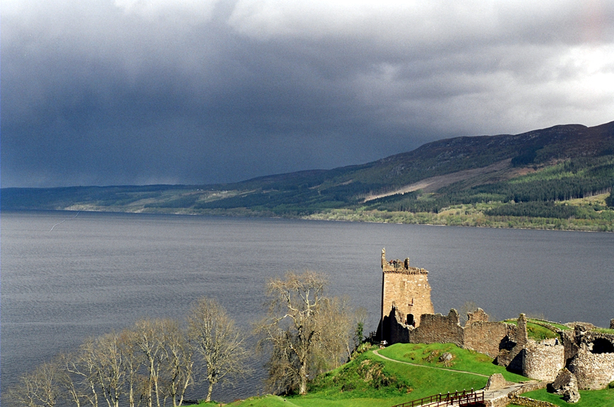

Juste au sud de Mexico, entre les canaux de Xochimico, se trouve une petite île au triste passé qui n’a jamais eu l’intention d’être une destination touristique.
L’île est connue sous le nom de « Isla de las Munecas ».
Elle est dédiée à l’âme perdue d’une pauvre fille qui a rencontré son destin trop tôt dans des circonstances étranges.
La région compte des milliers de personnes, mais cette petite île abrite des centaines de poupées terrifiantes.
Leurs membres coupés, leurs têtes décapitées et leurs yeux vierges ornent les arbres.
On dit qu’une fille a été retrouvée noyée dans des circonstances mystérieuses il y a de nombreuses années sur cette île et que les poupées sont possédées par son esprit.
La légende locale dit que les poupées bougent la tête et les bras et ont même ouvert les yeux.
Certains témoins affirment avoir entendu les poupées se murmurer entre elles, tandis que d’autres, qui se trouvaient sur un bateau près de l’île, ont dit que les poupées les avaient attirées pour qu’elles descendent sur l’île.
Don Julian Santana Barrera était le gardien de l’île. L’histoire raconte que Julian a trouvé une petite fille noyée dans des circonstances mystérieuses alors qu’il n’avait pas pu lui sauver la vie.
Peu de temps après, Julian a vu une poupée flottante près des canaux. La poupée appartenait très probablement à la petite fille. Il a pris la poupée et l’a accrochée à un arbre, en signe de respect et pour soutenir l’esprit de la jeune fille.
D’autres mettent en doute l’existence même de la jeune fille noyée.
Les rapports concluent que Julian a inventé l’histoire de la fille dans sa solitude.
Julian était apparemment hanté par l’esprit de la jeune fille et a commencé à accrocher d’autres poupées pour tenter de plaire à son esprit. Il s’est vite rendu compte que les poupées elles-mêmes étaient possédées par les esprits des filles mortes, et il a continué à collectionner les poupées effrayantes suspendues aux arbres sur toute l’île.
Selon ses proches, c’était comme si Julian était poussé par une force invisible qui l’a complètement changé. Apparemment, il a été très marqué par le fait qu’il n’a pas pu sauver la vie de la petite fille.
Autres légendes
Le château de Dracula

Bran, Transylvanie, Roumanie
Le Loch Ness
Inverness, Highlands, Ecosse
La forêt des suicides

Yamashi, Aokigahara, Japon
L'Eastern State Penitentiary

Philadelphie, Pennsylvanie, Etats-Unis
Le Hell Fire Club

Montpelier Hill, Dublin, Irlande
L'île des Poupées
Xochimico, Mexico, Mexique

Envie de réserver cette destination ?
Retour en haut de la page